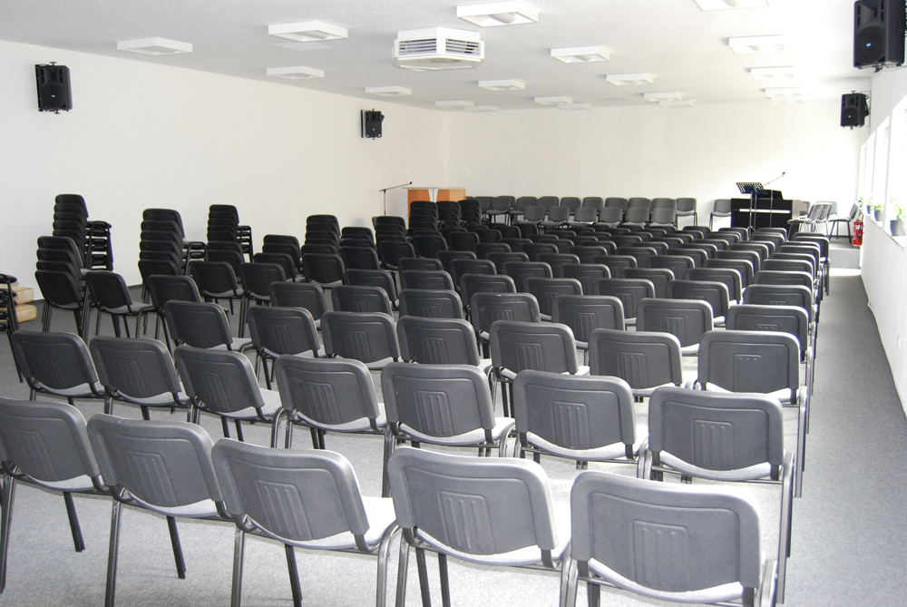

Wer hinter dem Café steht
Café Manna ist ein besonderer Ort der Begegnung – betrieben von Ehrenamtlichen aus einer christlichen Gemeinde in Speyer.

Café Manna e.V.
Hinter dem Café steht der gemeinnützige Verein Café Manna e.V. Die Mitarbeitenden kommen aus der Gemeinde in Speyer und aus Schwegenheim. Sie kochen, servieren und stehen an der Theke – ehrenamtlich.
Das Café liegt im Gebäude des CDH-Stephanus e.V. in der Boschstraße. Die Idee dahinter: ein Ort, an dem man Gemeinschaft erlebt und zugleich Menschen unterstützt, die Hilfe brauchen. Eingeladen sind ausdrücklich auch Gäste, die nicht zur Gemeinde gehören.
Christliches Diakonisches Hilfswerk Stephanus
Nach Abzug der laufenden Kosten gehen alle Spenden aus dem Café an das CDH-Stephanus.
Das Hilfswerk
Das CDH-Stephanus e.V. sitzt im selben Gebäude wie das Café und hilft seit 1988 Menschen in Not – heute mit Projekten unter anderem in der Ukraine, in Uganda, Indien, Sri Lanka, Äthiopien, Lettland und Moldawien.
Acht Patenschaften
Das Café selbst hat Patenschaften für vier Kinder in Indien und vier Kinder und Jugendliche in Uganda übernommen. Ihre Porträts hängen im Gastraum.
Warum „Manna“?
Manna ist in der Bibel das Brot, mit dem Gott das Volk Israel in der Wüste versorgt. Im Johannesevangelium greift Jesus das Bild auf und nennt sich selbst das Brot des Lebens. Daher kommt der Name.
„Ich bin das Brot des Lebens. Wer zu mir kommt, den wird nicht hungern.“ Johannes 6,35
Vom Konferenzraum zum Café
- Das Hilfswerk Stephanus beginnt seine Arbeit für Menschen in Not.
- Aus einem alten Lagerraum wird ein Konferenzraum für Mitgliederversammlungen.
- Im Konferenzraum wird ein Corona-Testzentrum eingerichtet.
- Ehrenamtliche aus der Gemeinde übernehmen den Raum und bauen ihn zum Café um.
- Café Manna öffnet – seitdem freitags und samstags von 18 bis 23 Uhr.

Fragen an den Verein?
Am schnellsten erreichst du uns telefonisch oder per WhatsApp.